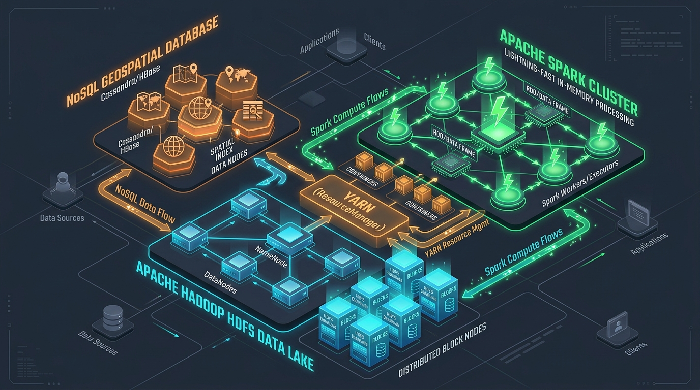

Continent-Scale Distributed Ingestion, Deduplication, Multi-Engine Analytics, and Geospatial Optimization over 17.52 Million European Material Flow Records
Why continent-scale material flows demand enterprise distributed computing architectures
Zero-sudo user-space cluster orchestrating HDFS, Spark, YARN, and MongoDB
/ewaste/raw/ across 128MB blocks.Layer 2 == "", isolating 139,963 Level-1 summary rows; writes Snappy Parquet.yearly, location, category, scenario, flow with predicate pushdown.2dsphere compound index on coordinates.
Solving multi-million-ton double counting in secondary material flow databases
In raw material flow datasets, summary rows and component breakdown rows are stored in the same flat table.
Strict filtering isolates true Level-1 summary rows where Layer 2 is blank:
Benchmarking low-level batch MapReduce on YARN against in-memory Spark SQL
mapper.py and reducer.py via hadoop-streaming-3.5.0.jar.Empirical findings across 31 countries, 7 product categories, and 8 flow taxonomies
| Rank | Country | ISO | Generated (Mg) | Million Tons |
|---|---|---|---|---|
| 1 | United Kingdom | GBR | 302,467,302.27 | 302.47 M |
| 2 | Germany | DEU | 299,730,670.33 | 299.73 M |
| 3 | France | FRA | 233,664,421.23 | 233.66 M |
| 4 | Italy | ITA | 191,617,288.72 | 191.62 M |
| 5 | Spain | ESP | 158,197,115.71 | 158.20 M |
| 6 | Poland | POL | 81,572,628.70 | 81.57 M |
Simulating BAU vs REC vs CIR scenarios and distributed Ordinary Least Squares regression
Benchmarked across 4 Spark MLlib models on OBS actuals (2010–2022):
Semi-structured schema validation & 2dsphere indexing across European recycling plants
["WEEE_Cat1", "WEEE_Cat4a", "WEEE_Cat5"]).| Facility Name | Location | Type | Capacity |
|---|---|---|---|
| Aurubis Smelter | Hamburg, DEU | Specialized Smelting | 280,000 Mg |
| Boliden Rönnskär | Skellefteå, SWE | Base/Precious Smelting | 120,000 Mg |
| Umicore Hoboken | Antwerp, BEL | Precious Metals Refining | 150,000 Mg |
| Remondis Lünen | Lünen, DEU | Integrated Dismantling | 95,000 Mg |
| Sims Lifecycle | Daventry, GBR | Automated Shredding | 80,000 Mg |
| Montello SpA | Bergamo, ITA | Integrated WEEE Sorting | 70,000 Mg |
Glassmorphism UI serving pre-aggregated Parquet datasets with sub-second response times
@st.cache_data to cache database queries and geographical GeoJSON payloads.#0f172a) and modern typography.| 1. Executive Overview | KPI scorecards, historical trends, category donut |
| 2. Geographic Analysis | Plotly European choropleth with bubble overlays |
| 3. Category Distribution | EU Directive Cat 1–6 rankings & stacked areas |
| 4. Scenario Comparison | BAU vs REC vs CIR policy trajectory simulation |
| 5. Stock & Flow Balance | Mass conservation across stocks, POM, and scrap |
| 6. MLlib Forecast | Actuals vs fitted regression line to 2035 |
| 7. Infrastructure Map | Interactive facility map loaded from MongoDB |
| 8. Cluster Architecture | Live daemon badges & embedded pipeline logs |
Big Data Analytics for Electronic Waste Generation Analysis & Recycling Infrastructure Optimization